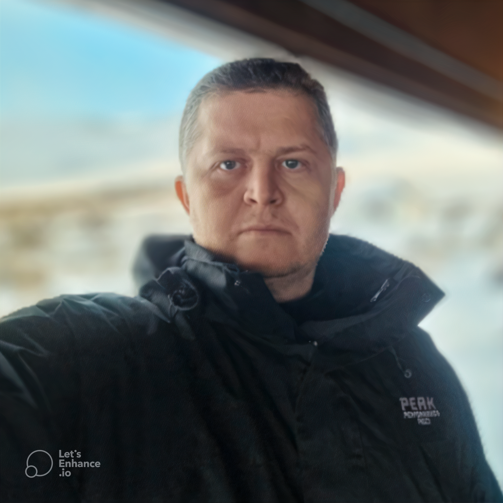

|  | Bacharel em Ciências da Computação pela Universidade de Fortaleza (2007) Mestre em Informática Aplicada pela Universidade de Fortaleza (2011), MBA em Gerência de Projetos (2013) e Doutor em Informática aplicada pela mesma instituição (2018). Professor efetivo do Instituto Federal do Ceará (IFCE), lotado no campus de Caninde. Em 2012, foi um dos responsáveis pela montagem do curso Tecnológico em Redes de Computadores do campus IFCE/Jaguaribe, tendo atuado no mesmo como coordenador de 11/2013 a 07/2014, retornando ao cargo a partir de 07/2015. Possui mais de 10 anos de atuação na iniciativa privada na área de Ciência da Computação. Experiência na coordenação de infraestrutura de TI no Fórum/Fortaleza, Tribunal de Justiça e BNB (Banco do Nordeste). Atuação acadêmica nas áreas de Arquitetura de Sistemas de Computação, Gerência de Projetos, Gestã o de Tecnologia da Informação. |
Formação Acadêmica
Graduação em Bacharelado em Ciências da Computação - 1998 - 2007
Mestrado em Informática Aplicada - 2008 - 2011
Universidade de FortalezaEspecialização em MBA em Gerenciamento de Projetos sob a Visão PMI - 2011 - 2013
Faculdade Estácio do Ceará, Estácio FIC
Doutorado em Informática Aplicada - 2013 - 2018
Universidade de Fortaleza
Especialização em ESPECIALIZAÇÃO EM DOCÊNCIA NA EDUCAÇÃO PROFISSIONAL, CIENTÍFICA E TECNOLÓGI - 2019 - 2020
Intituto Federal - Campus Canindé
Idiomas
Inglês
Compreende Razoavelmente, Fala Bem, Lê Bem, Escreve Bem
Português
Compreende Bem, Fala Bem, Lê Bem, Escreve Bem.
Espanhol
Compreende Razoavelmente, Fala Pouco, Lê Razoavelmente, Escreve Pouco.
Francês
Compreende Razoavelmente, Fala Razoavelmente, Lê Razoavelmente, Escreve Razoavelmente.
Áreas de Atuação
Grande área: Ciências Exatas e da Terra / Área: Ciência da Computação / Subárea: Sistemas de Computação/
Especialidades: Arquitetura de Sistemas de Computação, Sistemas de Informação, Hardware, Técnicas de análise e segurança da Informação.